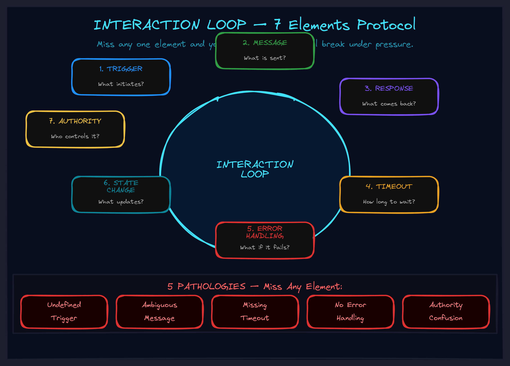

May 2026CompositionDrift & repair
Why Your Systems Break When They Talk to Each Other
The seven-element protocol that turns fragile handoffs into bulletproof coordination — in AI agents, teams, and everything between.

The Silent Failures
I was building an agent system. The agent could call tools. The tools could return results. On paper, everything was connected. In practice, coordination kept breaking.
The agent called a tool and didn't know what to do with certain response types. A tool returned an error but the agent treated it as success. A long-running tool had no timeout and the agent waited forever. Two tools had overlapping responsibilities and the agent called both unnecessarily.
Every individual component worked. The connections between them didn't. And the connections were never designed — they were assumed.
The capability was there. The protocol wasn't. Nobody had defined how the pieces actually talk to each other.
The Interaction Loop
After tracing every failure back to its root, I found they all shared the same shape: an undefined interaction loop.
An interaction loop is the protocol for how two components communicate. Not "they can talk" but "there are explicit rules for how they talk." After fixing the system, I extracted what a well-defined loop actually requires. Seven elements. Miss any one, and you have a hole that will break under pressure.
The Seven Elements
- Trigger. What initiates the communication? What event causes Component A to talk to Component B? If the answer is "whenever it feels like it," you have inconsistent activation.
- Message. What is communicated? What data, what format, what semantics? If the message is ambiguous, one side will think "success" and the other will think "failure."
- Expected Response. What should come back? What types of responses are valid? Without a response contract, interpretation diverges.
- Timeout. How long to wait? What happens if nothing comes back? If the answer is "forever," congratulations — you've built a system that can freeze permanently on one slow handoff.
- Error Handling. What if the response is unexpected? What are the failure modes? "Pretend it won't fail" is not a strategy. It's a time bomb.
- State Change. What changes as a result of the interaction? How do both components update? Without this, you get ghost state — components that think they're synchronized but aren't.
- Authority. Who can trigger this interaction? Who must respond? What permissions apply? When both sides think the other is in charge, nothing happens. When both sides think they're in charge, everything conflicts.
Each undefined element is a potential failure point. Define all seven, and the loop is robust. Leave one blank, and you've left a door open for the kind of failure that's invisible until it's catastrophic.
The Five Pathologies
Looking across system failures — in software, in teams, in organizations — I found the same five broken patterns recurring everywhere:
Undefined trigger. "When should this component talk to that one?" Nobody knows. Result: interactions happen sporadically. Sometimes too much. Sometimes not at all. Debugging is a nightmare because you can't reproduce the conditions.
Ambiguous message. "What does this response mean?" Depends on who's reading it. Component A sends a status code that means "partial success." Component B interprets it as "complete success." The system appears to work until someone audits the output.
Missing timeout. "How long should I wait?" Forever, apparently. One slow dependency blocks the entire chain. Cascading delays propagate through the system. Everything looks stuck but nothing has technically failed.
No error handling. "What if this fails?" Silence. The failure is swallowed. State corrupts quietly. By the time someone notices, the root cause is buried under three layers of compensating behavior.
Authority confusion. "Who's responsible for this handoff?" Both sides assume the other handles it. Result: action gaps — things that nobody does because everybody thinks somebody else is doing them. Or worse: action conflicts — both sides act, producing contradictory results.
Every pathology has the same root: the loop wasn't designed. It was assumed.
Loops Compose
Real systems don't have one interaction loop. They have dozens, and those loops compose in specific ways:
Sequential: A triggers B, B triggers C. Each loop is a link in a chain. If B's output format doesn't match C's expected input, the chain breaks at the join.
Parallel: A triggers B and C simultaneously. Both run. Results merge. If the merge strategy isn't defined, you get race conditions, duplicated work, or contradictory state.
Nested: A triggers B, which internally runs its own loop with C. B returns when its internal loop completes. If inner errors don't propagate to the outer loop, A thinks everything is fine when it isn't.
Conditional: A triggers B if condition X is true, C if condition Y is true. If conditions aren't mutually exclusive, both fire. If they're not exhaustive, neither fires.
Composition adds complexity, but follows the same principle: each individual loop must be defined, and the relationships between loops must also be explicit. Individually-correct loops can still fail when combined if nobody designed the composition.
The Audit Protocol
Use this for any system you're building, debugging, or inheriting:
- List every interaction. What components talk to what other components? Don't assume — draw it. If you can't draw it, you don't have a loop, you have an assumption.
- For each interaction, fill in the seven elements. Trigger, message, response, timeout, error handling, state change, authority. If you can't answer any of these, the loop isn't designed yet. That blank cell is where your system will break.
- Check implicit loops. Components often interact through shared state, side effects, or conventions. These implicit loops work during development and break in production. Make them explicit.
- Verify composition. For sequential loops: do outputs match inputs? For parallel loops: is the merge strategy defined? For nested loops: do inner errors propagate? For conditional loops: are conditions complete and disjoint?
- Test under pressure. What happens at timeout? With unexpected responses? When authority is contested? The loop protocol is the documentation. Keep it with the code.
Beyond Software
This isn't just about code. Interaction loops show up everywhere.
Team communication. When one team hands off work to another, what's the trigger? What's the expected response? What's the timeout? What happens if nobody picks it up? Most handoff failures in organizations trace back to undefined loops — not lack of capability, but lack of protocol.
Manager-report dynamics. Your one-on-one has an interaction loop. Is the trigger scheduled or event-driven? What's the message format — status update, problem flag, or decision request? What's the expected response — action, acknowledgment, or escalation? When managers and reports have different answers to these questions, the one-on-one "isn't working" — but the real problem is the loop was never designed.
AI agent orchestration. This is where interaction loops become existential. When you have multiple AI agents coordinating — each with their own capabilities, context, and authority — undefined loops don't just cause bugs. They cause agents that spin, hallucinate, or take unauthorized actions. The seven-element protocol isn't optional for AI. It's structural safety.
In a world where AI agents coordinate autonomously, every undefined loop is a potential autonomous failure. Define the protocol or accept the chaos.
What Comes Next
Interaction loops are one component of a larger systems design framework — how to build things that actually work reliably under pressure, whether those things are AI agents, teams, or organizations. The pattern is always the same: make implicit coordination explicit, define the protocol, test the failure modes.
Explore the frameworks to see how interaction loops fit into the bigger picture. Or if you're building AI systems and discovering that coordination failures are eating your reliability — let's talk about it.